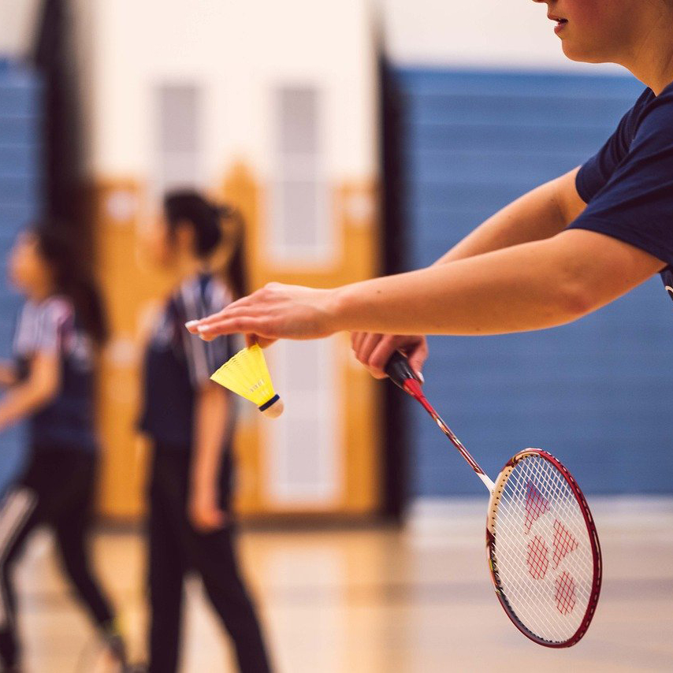

I was first introduced to badminton through a cheap set of miscellaneous backyard sports equiptment that my tia bought for me and my cousins to play with together during outside gatherings. The badminton rackets and birdie were my favorite out of everything in that mixed bag, and I have great memories of playing with my cousins.
When I was in high school, there were different gym classes offerend each semester. Freshman had last pick for gym electives. As a sophmore, I noticed one of the electives was badminton.
I was excited to be in the same gym period as one of my close friends and to play badminton in a more serious setting so I could improve. I asked my friend if she wanted to sign up for badminton with me so we could be playing partners. The gym teacher often ran tournament style rotations during class. I was not a very athletic, but I was excited to compete in something I was interested in. We played very close matches with upperclassman!
It's been quite some time since I have practiced, and it has been tough to find courts to play on locally. I hope to pick this hobby up again with my partner and maybe even start a casual local group in one of the parks in town. It's a great feeling to find a sport that you enjoy, can play with others, and improve in!